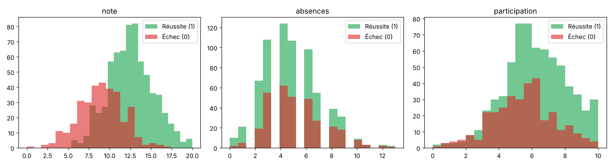
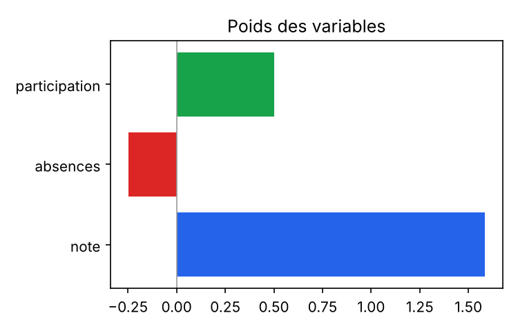
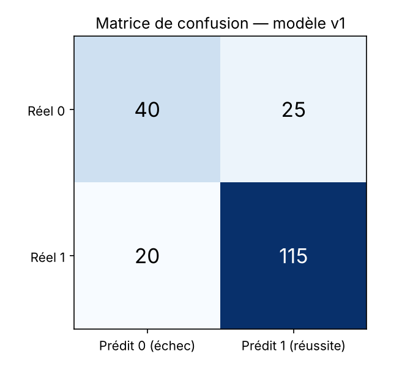

MLOps Lab — Student Success
De l'expérimentation dans Google Colab au déploiement avec Docker Desktop : construire, entraîner, évaluer, sauvegarder, déployer, surveiller et mettre à jour un modèle de Machine Learning.
🎯 Ce que vous allez apprendre
- Le cycle de vie complet d'un modèle ML
- Entraîner et évaluer dans Colab
- Exposer un modèle via une API REST Flask
- Conteneuriser avec Docker & Compose
- Surveiller, versionner, réentraîner
🧰 Outils
- Google Colab (Python, scikit-learn)
- Terminal macOS
- Docker Desktop (Apple Silicon)
- Navigateur web
🚀 Parcours conseillé
- Sections 1 → 4 : comprendre et préparer
- Sections 5 → 10 : Machine Learning
- Sections 11 → 14 : déployer et prédire
- Sections 15 → 21 : exploiter, s'évaluer
Pipeline MLOps animé Simulation
2. Présentation du projet
Scénario : une école souhaite repérer tôt les étudiants en difficulté pour leur proposer un accompagnement. Nous construisons un prototype qui prédit la réussite à partir de trois indicateurs.
Variables d'entrée (features)
| Variable | Signification | Plage |
|---|---|---|
note | Moyenne sur 20 | 0 – 20 |
absences | Nombre d'absences | 0 – 30 |
participation | Score de participation | 0 – 10 |
Variable cible (target)
reussite : 1 = réussite probable, 0 = risque d'échec.
C'est une classification binaire : le modèle répond à une question oui/non, avec une probabilité.
Pourquoi le MLOps et pas seulement du Machine Learning ?
Un notebook qui affiche une accuracy de 0,78 n'est pas un service. Pour être utile, le modèle doit être sauvegardé, déployé dans une API, surveillé et mis à jour quand les données changent. Le MLOps applique au ML les pratiques du DevOps (Git, conteneurs, tests, automatisation) en y ajoutant la gestion des données et des modèles.
3. Architecture MLOps du laboratoire
Deux environnements, trois artefacts, deux conteneurs.
Pourquoi deux conteneurs ?
Séparer le site (statique) de l'API (Python) permet de les mettre à jour, redémarrer et faire évoluer indépendamment : c'est le principe des micro-services.
Pourquoi Nginx devant Flask ?
Le navigateur ne parle qu'à Nginx (une seule origine, pas de problème CORS). Nginx relaie /api/ vers Flask via le réseau interne Docker.
Pourquoi 127.0.0.1 ?
Les ports ne sont publiés que sur l'interface locale du Mac : rien n'est exposé sur le Wi-Fi de la salle de cours.
4. Préparation des outils (Mac)
Avant de commencer, vérifiez que votre Mac dispose de tout le nécessaire.
- Ouvrir le Terminal — ⌘+Espace, tapez
Terminal, Entrée. Le Terminal est l'outil pour taper des commandes. - Vérifier l'architecture
Résultat attendu :uname -marm64(Apple Silicon) oux86_64(Intel). - Vérifier Docker Desktop — ouvrez l'application Docker Desktop ; en bas à gauche doit apparaître « Engine running ». Puis :
docker --version docker compose version docker info | head -20 - Vérifier Python (facultatif, pour les tests hors Docker)
python3 --version - Vérifier que les ports sont libres
Aucune ligne = port libre. ⚠️ Sur macOS, le Récepteur AirPlay (processuslsof -nP -iTCP:5001 -sTCP:LISTEN lsof -nP -iTCP:8501 -sTCP:LISTENControlCenter) occupe le port 5000 : c'est pourquoi l'API est publiée sur 5001 côté Mac (le conteneur, lui, écoute toujours sur 5000).
Cannot connect to the Docker daemon → Docker Desktop n'est pas lancé. Ouvrez-le et attendez « Engine running ».5. Le dataset synthétique
1 000 étudiants fictifs générés avec une graine aléatoire fixe (seed = 42) : tout le monde obtient exactement les mêmes données.
Objectif : explorer, trier et filtrer un échantillon. Consigne : réglez le nombre de lignes, cliquez sur un en-tête pour trier.
Visualisation des variables Simulation

Code de génération (extrait)
rng = np.random.default_rng(42)
note = np.clip(rng.normal(11.5, 3.2, n), 0, 20)
absences = np.clip(rng.poisson(5, n), 0, 30)
participation = np.clip(rng.normal(6, 2, n), 0, 10)
score = 0.55*(note-10) - 0.18*(absences-5) + 0.35*(participation-5)
proba = 1/(1+np.exp(-score))
reussite = (rng.random(n) < proba).astype(int)6. Google Colab
Colab est un Jupyter Notebook hébergé par Google : du Python dans le navigateur, gratuit, sans installation.
- Ouvrir colab.research.google.com et se connecter avec un compte Google.
- Importer le notebook : Fichier → Importer un notebook → Importer, choisir
colab/mlops_lab_student_success.ipynb. - Exécuter une cellule : cliquer dedans puis ⇧+Entrée. Ou Exécution → Tout exécuter.
- Observer : les sorties apparaissent sous chaque cellule (tableaux, graphiques, JSON des métriques).
- Télécharger : la dernière cellule crée
artifacts_v1.zipet le télécharge dans votre dossier Téléchargements.
Structure du notebook (14 parties)
- Installation / versions
- Génération du dataset
- Exploration
- Visualisations
- Prétraitement
- Entraînement
- Prédictions
- Évaluation
- Matrice de confusion
- Interprétation
- Export des artefacts
- Rechargement
- Téléchargement
- Exercices corrigés
Erreur fréquente
ModuleNotFoundError → relancez la cellule 1 (installation). Runtime disconnected → Exécution → Redémarrer et tout exécuter ; Colab coupe les sessions inactives.
python3 training/train.py --version 1.7. Prétraitement et séparation train / test
Deux décisions clés : standardiser les variables et réserver des données de test que le modèle ne verra jamais.
Objectif : comprendre test_size. Consigne : déplacez le curseur.
Pourquoi StandardScaler ?
Les variables n'ont pas la même échelle (0-20, 0-30, 0-10). La standardisation ramène chacune à une moyenne 0 et un écart-type 1 : les poids deviennent comparables et l'optimisation converge mieux.
Pourquoi un Pipeline ?
Pipeline([("scaler", StandardScaler()),
("clf", LogisticRegression())])Le scaler est appris sur le train et sauvegardé avec le modèle : à l'inférence, l'API applique automatiquement la même transformation. Pas de fuite, pas d'oubli.
train_test_split avant fit évite ce piège.8. Entraînement du modèle
Une régression logistique : simple, rapide, explicable. Elle apprend un poids par variable et transforme la somme pondérée en probabilité (sigmoïde).
Le code
model = Pipeline([
("scaler", StandardScaler()),
("clf", LogisticRegression(max_iter=1000, random_state=42))
])
model.fit(X_train, y_train)fit = apprendre. random_state = reproductibilité.

Et si l'on changeait de modèle ?
Le Pipeline rend l'échange trivial : remplacer LogisticRegression par RandomForestClassifier suffit (c'est ce que fait la v2, section 16). La forêt aléatoire capture des interactions non linéaires mais est moins lisible.
9. Évaluation
Mesurer sur le jeu de test, jamais sur le train.
Objectif : relier les 4 cases aux métriques. Consigne : modifiez les valeurs ; les métriques se recalculent.

10. Les artefacts : une version = trois fichiers
📦 model.joblib
Le Pipeline sérialisé (scaler + modèle). Se recharge avec joblib.load.
📈 metrics.json
Accuracy, précision, rappel, F1, matrice de confusion, tailles train/test.
🪪 metadata.json
Version, date, graine, versions des bibliothèques, features, plages valides, avertissement.
Métadonnées du modèle actuellement déployé Données réelles de l'API
chargement…Transfert Colab → Mac
- Dans Téléchargements, double-cliquez sur
artifacts_v1.zippour le décompresser. - Copiez
model.joblib,metrics.json,metadata.jsondansMLOPS-LAB-STUDENT-SUCCESS/artifacts/. - Vérifiez :
ls -la artifacts/
11. L'API REST Flask
Une API REST expose le modèle à n'importe quel client (navigateur, application, script) par HTTP et JSON.
Routes
| Méthode | Route | Rôle |
|---|---|---|
| GET | /health | L'API est-elle vivante ? Quelle version ? |
| GET | /metadata | Métadonnées + métriques |
| POST | /predict | Prédiction à partir d'un JSON |
| GET | /metrics | Compteurs de monitoring |
| GET | /logs | 50 dernières prédictions |
| GET | /versions | Versions disponibles |
Extrait de code
@app.post("/predict")
def predict():
clean, err = validate(request.get_json())
if err:
return jsonify({"error": err}), 400
X = pd.DataFrame([clean], columns=FEATURES)
pred = int(MODEL.predict(X)[0])
proba = float(MODEL.predict_proba(X)[0][1])
return jsonify({"prediction": pred,
"probability_success": proba})Objectif : comprendre GET/POST, codes 200/400/404. Consigne : choisissez une requête et envoyez-la.
Requête…Réponse…/predict valide contient "mode": "Modèle réel".Depuis le Terminal (curl)
curl -s http://127.0.0.1:5001/health
curl -s -X POST http://127.0.0.1:5001/predict \
-H "Content-Type: application/json" \
-d '{"note": 14, "absences": 2, "participation": 8}'12. Comprendre Docker
🧾 Dockerfile
La recette : image de base, dépendances, code, commande de démarrage.
💿 Image
Le résultat figé de la recette, versionné, partageable.
📦 Conteneur
Une instance en cours d'exécution d'une image, isolée.
🗄️ Volume
Un espace de stockage qui survit au conteneur.
Dockerfile.api (commenté)
FROM python:3.12-slim # image de base légère
WORKDIR /app # dossier de travail
COPY api/requirements.txt . # dépendances d'abord (cache)
RUN pip install --no-cache-dir -r requirements.txt
COPY api/app.py . # le code
COPY artifacts/ ./artifacts/ # le modèle
USER appuser # pas de root
EXPOSE 5000
HEALTHCHECK CMD python -c "..." # sonde /health
CMD ["gunicorn","--bind","0.0.0.0:5000","app:app"]Objectif : mémoriser les commandes. Consigne : tapez
help, puis docker ps, docker images, docker compose up -d…13. Déploiement avec Docker Compose
Un seul fichier, compose.yaml, décrit les deux services, leur réseau et leurs ports.
compose.yaml (essentiel)
services:
api:
build: { context: ., dockerfile: Dockerfile.api }
ports: ["127.0.0.1:5001:5000"] # 5001 côté Mac
healthcheck: { test: [...], interval: 15s }
frontend:
build: { context: ., dockerfile: Dockerfile.frontend }
ports: ["127.0.0.1:8501:80"]
depends_on:
api: { condition: service_healthy }
networks:
mlops-net: { driver: bridge }Commandes
- Se placer dans le projet
cd ~/Documents/MLOPS-LAB-STUDENT-SUCCESS - Construire et démarrer
docker compose up -d --build-d= en arrière-plan,--build= reconstruire les images. - Vérifier
docker compose ps docker compose logs -f api - Ouvrir http://127.0.0.1:8501
- Arrêter
docker compose down
docker compose ps affiche mlops-api et mlops-frontend avec l'état running (healthy). Dans Docker Desktop, les deux conteneurs apparaissent sous le projet mlops-lab-student-success.port is already allocated → un autre programme utilise 5000 ou 8501 (AirPlay !). Changez le port de gauche dans compose.yaml (ex. 127.0.0.1:5002:5000).14. Prédire réellement
Ce formulaire envoie vos valeurs à /api/predict ; la réponse vient du modèle Python dans le conteneur. Aucun calcul n'est simulé en JavaScript.
Formulaire Modèle réel
Requête envoyée : —
Résultat
Réponse JSON brute
—15. Monitoring Données réelles de l'API
Une fois déployé, un modèle doit être observé : volume de requêtes, erreurs, latence, répartition des prédictions.
Répartition des prédictions
Dernières prédictions (logs)
docker compose logs -f api # logs JSON structurés en direct
curl -s http://127.0.0.1:5001/metrics16. Versionnement et réentraînement
Les données évoluent (data drift) : une nouvelle promotion n'a pas le même profil. On réentraîne un modèle v2, on le compare à la v1, puis on redéploie.
- Réentraîner sur des données « dérivées » avec une forêt aléatoire :
python3 training/train.py --version 2 --drift 0.6 --n 1500 --model rf - Comparer v1 et v2 (comparateur ci-dessous).
- Redéployer :
docker compose up -d --build api curl -s http://127.0.0.1:5001/health # model_version doit afficher 2 - Revenir à la v1 si besoin :
MODEL_FILE=model_v1.joblib docker compose up -d api.
Objectif : décider quelle version déployer. Consigne : cliquez sur « Charger ».
17. Tests automatisés (pytest)
Unitaires
tests/test_training.py : dataset reproductible, plages, absence de fuite, métriques cohérentes, rechargement du modèle.
API
tests/test_api.py : routes, codes HTTP, validation des entrées, monitoring.
Intégration
tests/test_integration.py : pile Docker démarrée, Nginx → Flask, prédiction depuis le proxy.
pip install -r requirements.txt
python3 -m pytest tests/test_training.py tests/test_api.py -v
docker compose up -d --build
python3 -m pytest tests/test_integration.py -vPASSED. Un test SKIPPED dans l'intégration signifie que la pile Docker n'est pas démarrée.18. Exercices pratiques (progressifs)
★ Exercice 1 — Première prédiction en ligne de commande
Avec curl, obtenez la prédiction pour un étudiant ayant 9/20, 12 absences et 3/10 de participation.
Corrigé
curl -s -X POST http://127.0.0.1:5001/predict -H "Content-Type: application/json" -d '{"note":9,"absences":12,"participation":3}'Résultat : "prediction": 0, probabilité de réussite faible (≈ 0,2).
★ Exercice 2 — Provoquer une erreur 400
Envoyez une participation de 15. Que répond l'API et pourquoi ?
Corrigé
Code 400, message « Le champ 'participation' doit être compris entre 0 et 10 ». La validation protège le modèle contre des entrées hors domaine.
★★ Exercice 3 — Changer le port du frontend
Publiez le frontend sur 8080 au lieu de 8501.
Corrigé
Dans compose.yaml : "127.0.0.1:8080:80", puis docker compose up -d frontend. Nginx écoute toujours 80 dans le conteneur ; seul le port publié change.
★★ Exercice 4 — Lire les logs structurés
Lancez 3 prédictions puis retrouvez-les dans les logs du conteneur api.
Corrigé
docker compose logs api | grep '"msg": "prediction"'★★★ Exercice 5 — Entraîner une v3 et la déployer
Entraînez une v3 (régression logistique, drift 0,3, 2 000 lignes), comparez-la et déployez-la.
Corrigé
python3 training/train.py --version 3 --drift 0.3 --n 2000 --model logreg
docker compose up -d --build api
curl -s http://127.0.0.1:5001/versions★★★ Exercice 6 — Ajouter une route /features
Ajoutez à l'API une route GET qui renvoie la liste des features et leurs plages.
Corrigé
@app.get("/features")
def features():
return jsonify({"features": FEATURES, "ranges": RANGES})Puis reconstruire l'image : docker compose up -d --build api.
19. QCM final Auto-évaluation
12 questions. Choisissez une réponse par question puis cliquez sur « Corriger ».
20. Glossaire
21. Dépannage
| Symptôme | Cause probable | Solution |
|---|---|---|
Cannot connect to the Docker daemon | Docker Desktop fermé | Ouvrir Docker Desktop, attendre « Engine running » |
port is already allocated | Port 5001/8501 occupé (autre projet) — 5000 est pris par AirPlay | Changer le port gauche dans compose.yaml ou libérer le port |
| Badge « API hors ligne » dans ce site | Conteneur api arrêté ou unhealthy | docker compose ps, docker compose logs api, docker compose up -d api |
502 Bad Gateway sur /api/ | Nginx démarré avant Flask | Attendre 10 s (healthcheck) ou docker compose restart frontend |
FileNotFoundError: model.joblib | Artefacts absents du dossier artifacts/ | Relancer le notebook ou python3 training/train.py --version 1 |
| Prédiction identique quelles que soient les valeurs | Mauvais ordre des colonnes | Utiliser pd.DataFrame([...], columns=FEATURES) |
| Le site ne se met pas à jour après modification | Image non reconstruite / cache navigateur | docker compose up -d --build frontend puis ⌘⇧R |
no space left on device | Images Docker accumulées | docker system prune (⚠️ supprime les images inutilisées) |
| Erreur de plateforme (amd64/arm64) | Image non multi-arch | Les images utilisées (python, nginx) sont multi-arch ; sinon --platform linux/amd64 |